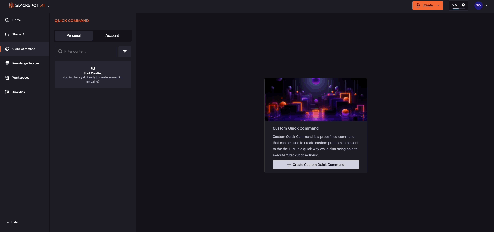
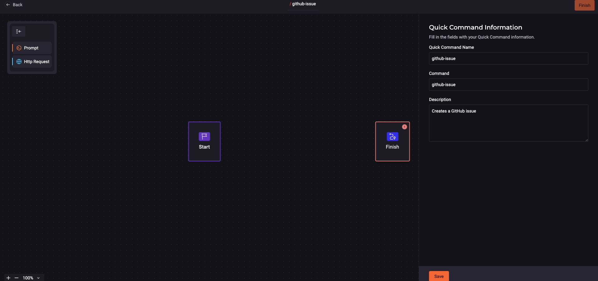

Como criar Quick Commands IDE
Documentação contendo o passo a passo para criação de um Quick Command com base na documentação oficial da ©StackSpot.
Criando o seu Quick Command
Siga os passos para criar:
Passo 1. Acesse o Portal da StackSpot AI
Passo 2. No menu principal, clique em ‘Quick Command’;
Passo 3. Clique no botão ‘Criar Quick Command’;
Passo 4. Selecione a opção: IDE;
Passo 5. Preencha os campos para adicionar informações sobre o seu Quick Command;
-
Nome do Quick Command: adicione um nome claro e descritivo para o seu comando. Exemplo: Technical Debt
-
Comando: adicione um nome que será usado posteriormente. Ele deve seguir o padrão de slug. Para mais informações sobre Slugs, confira o padrão do slug. Exemplo: technical_debt_1
-
Descrição: adicione uma descrição clara e objetiva sobre o que o seu comando faz. Exemplo: Criar uma issue no GitHub destacando a dívida técnica no código selecionado e sugerir uma forma de correção.
Passo 6. Clique no botão 'Próximo'. Você pode escolher entre usar os templates disponíveis (pré-preenchidos) ou criar um template do zero, conforme sua necessidade.
Passo 7. Clique no botão 'Salvar' e confira o resumo do seu Quick Command
;Confira a imagem de criação do Quick Command:

Criação de um Quick Command de ‘Prompt’
Confira um exemplo de criação de um Quick Command de ‘Prompt’:
1. Clique em 'Criar em branco'. Aperte e arraste a caixa de 'Prompt' para perto do 'Início'. É necessário conectar as caixas com a linha:
2. Preencha os campos na caixa do prompt:
-
o nome do seu prompt: adicione um identificador slug seguindo o padrão do slug
Confira um exemplo: /titulo__da_issue
-
Insira seu prompt: escreva o que você quer que seu comando faça.
Confira a imagem de como criar o prompt:

Seguindo esse passo a passo será possível criar os Quick Commands com os prompts disponibilizados.